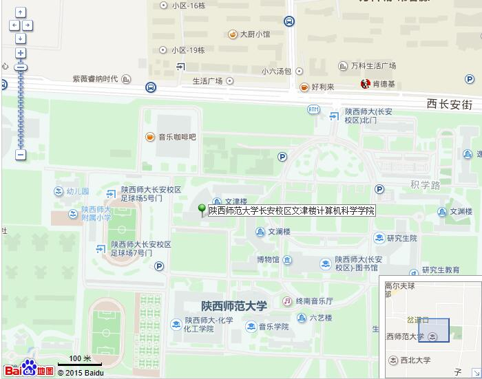

招生信息
硕士生招生：2021年度硕士生报名已经启动，欢迎有志于人工智能、计算机视觉与图像处理、深度学习等领域的学生保送或报考，本校外校不限。请将个人简历，成绩单及相关资料发送到邮箱：zpei@snnu.edu.cn。 录用学生会提前进行科研培训，并有机会参加顶尖实验室科研课题，推免直博等。
本科生招生: 长期欢迎优秀本科生随时和我联系！
联系地址
陕西师范大学长安校区，文津楼计算机科学学院。

硕士生招生：2021年度硕士生报名已经启动，欢迎有志于人工智能、计算机视觉与图像处理、深度学习等领域的学生保送或报考，本校外校不限。请将个人简历，成绩单及相关资料发送到邮箱：zpei@snnu.edu.cn。 录用学生会提前进行科研培训，并有机会参加顶尖实验室科研课题，推免直博等。
本科生招生: 长期欢迎优秀本科生随时和我联系！
陕西师范大学长安校区，文津楼计算机科学学院。
